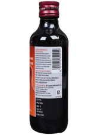
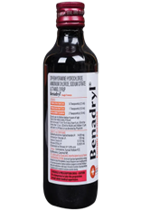
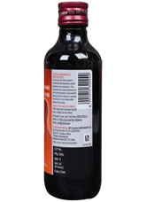
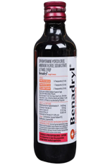

Benadryl syrup is used in the treatment of cough. It provides relief from allergy symptoms such as runny nose, sneezing, watery eyes. It also thins mucus in the nose, trachea, and lungs, making it easier to cough.
Allergy
Sneezing
Runny nose
Watery eyes
Coughing
When to Take Benadryl Syrup
It helps in reducing cough and clearing mucus from the throat and lungs.
To Treat Cough:
Coughing is a sudden, forced expulsion of air that helps clear any mucus in the throat or airways (sticky, white, solid fluid-like matter in the throat) or dust that has passed from the air to the body through the nose. If it's more frequent due to certain diseases (such as asthma) or allergies, it can be bothersome.
Benadryl Syrup helps release thick mucus and reduces its stickiness, making it easier for coughs to come out. This makes it easier for air to go in and out. It will also relieve allergy symptoms, such as watery eyes, sneezing, runny nose, or throat inflammation, and will help you carry out your daily tasks more easily. Taking this medication allows you to live your life more freely without worrying too much about things that relieve your symptoms.
How to Take Benadryl Syrup
Follow these guidelines for the correct dosage and administration of Benadryl Syrup:
Dosage Recommendations:
For children aged 4-6: Half a teaspoon (2.5 ml)
For children aged 6-12: One teaspoon (5 ml)
For adults (12 years and older): Two teaspoons (10 ml)
Administration Instructions:
Benadryl Syrup can be taken with or without food, as directed by your doctor.
Shake the bottle well before each use. Measure the dosage using the measuring cup provided with the syrup.
Take the syrup with water for easier swallowing.
Dosage Limits:
Warning: This medication should not be given to children under the age of 4.
Ensure that the daily dosage does not exceed the following limits:
Children aged 4-6: Maximum of 15 ml per day (3 doses)
Children aged 6-12: Maximum of 30 ml per day (6 doses)
Adults (12 years and older): Maximum of 60 ml per day (6 doses)
Frequency:
Take the medication every 4 hours or as directed by your doctor.
Common Side Effects
Abdominal pain
Dizziness
Drowsiness
Poor coordination (difficulty concentrating)
Allergic reaction
Runny nose (thick fluid coming out of the mouth)
Most of these side effects are temporary and don't require any medical attention. If they persist or you're concerned about them, consult your doctor.
What to Do
Inform your doctor: Let your doctor know about all other medications you are taking, as some may interact adversely.
Stay hydrated: Drink plenty of fluids to help reduce throat irritation.
Consult your doctor: Inform your doctor if you have liver or kidney disease, are pregnant, or breastfeeding.
Monitor blood glucose: If you have diabetes, check your blood glucose regularly while taking this medication.
Share your history: Let your doctor know if you have a history of thyroid or heart disease.
Monitor symptoms: Stop taking Benadryl Syrup if your cough persists for more than a week, or if it’s accompanied by fever, rash, or persistent headache.
What Not to Do
Do not stop medication: Never stop using this medicine without consulting your doctor, as symptoms may return or worsen.
Avoid self-medication: Never take this medication on your own or recommend it to someone else without consulting a doctor.
 


